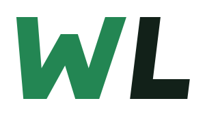
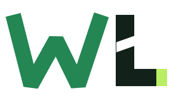
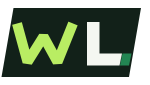

AJÁNLOTT IRÁNY
01

WebLendület
Slant
Előredőlő, tömör betűformák. A lendületet nem egy direkt nyíl, hanem a feszes dőlés és az emelkedő belső ritmus adja.
Három önálló, geometrikus WL-rendszer. Mindegyik egyszínű változatban és 32 pixeles méretben is működőképes.

Előredőlő, tömör betűformák. A lendületet nem egy direkt nyíl, hanem a feszes dőlés és az emelkedő belső ritmus adja.

Erős W és precízen vágott L. A diagonális metszés és az apró lime akcentus digitális, technikai karaktert ad.

Önálló embléma negatív térrel. Erősebb, zártabb jel, amely faviconként és közösségi profilképként különösen stabil.